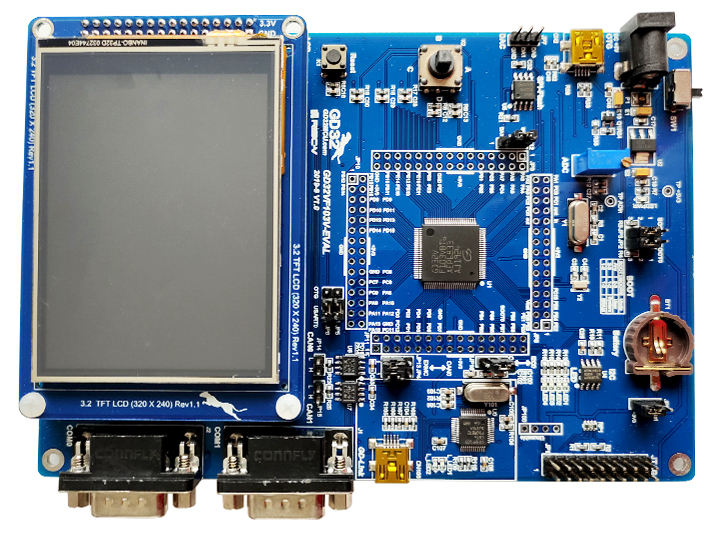

GigaDevice GD32VF103V-EVAL¶
Overview¶
The GD32V103V-EVAL board is a hardware platform that enables prototyping on GD32VF103VB RISC-V MCU.
The GD32VF103VB features a single-core RISC-V 32-bit MCU which can run up to 108 MHz with flash accesses zero wait states, 128 KiB of Flash, 32 KiB of SRAM and 80 GPIOs.
Hardware¶
GD32VF103VBT6 MCU
AT24C02C 2Kb EEPROM
GD25Q16 16Mbit SPI and QSPI NOR Flash
4 x User LEDs
1 x Joystick (L/R/U/D/C)
2 x USART (RS-232 at J1/J2 connectors)
1 x POT connected to an ADC input
USB FS connector
Headphone interface
1 x CAN
3.2” RGB-LCD (320x240)
GD-Link on board programmer
J-Link/JTAG connector
For more information about the GD32VF103 SoC and GD32VF103V-EVAL board:
Supported Features¶
The board configuration supports the following hardware features:
Peripheral |
Kconfig option |
Devicetree compatible |
|---|---|---|
GPIO |
||
Machine timer |
||
Nuclei ECLIC Interrupt Controller |
||
PWM |
||
USART |
Serial Port¶
The GD32VF103V-EVAL board has two serial communications port. The default port is USART0 with TX connected at PA9 and RX at PA10.
Programming and Debugging¶
Before programming your board make sure to configure boot and serial jumpers as follows:
JP2/3: Select 2-3 for both (boot from user memory)
JP5/6: Select 1-2 positions (labeled as
USART0)
Using GD-Link¶
The GD32VF103V-EVAL includes an onboard programmer/debugger (GD-Link) which allows flash programming and debugging over USB. There is also a JTAG header (JP1) which can be used with tools like Segger J-Link.
Note
The OpenOCD shipped with Zephyr SDK does not support GD32VF103. You will need to build the riscv-openocd fork. Note that compared with OpenOCD, J-Link offers a better programming and debugging experience on this board.
Build the Zephyr kernel and the Hello World sample application:
west build -b gd32vf103v_eval samples/hello_world -- -DOPENOCD=<path/to/riscv-openocd/bin/openocd> -DOPENOCD_DEFAULT_PATH=<path/to/riscv-openocd/share/openocd/scripts>Run your favorite terminal program to listen for output. On Linux the terminal should be something like
/dev/ttyUSB0. For example:minicom -D /dev/ttyUSB0 -oThe -o option tells minicom not to send the modem initialization string. Connection should be configured as follows:
Speed: 115200
Data: 8 bits
Parity: None
Stop bits: 1
To flash an image:
west build -b gd32vf103v_eval samples/hello_world west flash
You should see “Hello World! gd32vf103v_eval” in your terminal.
To debug an image:
west build -b gd32vf103v_eval samples/hello_world west debug